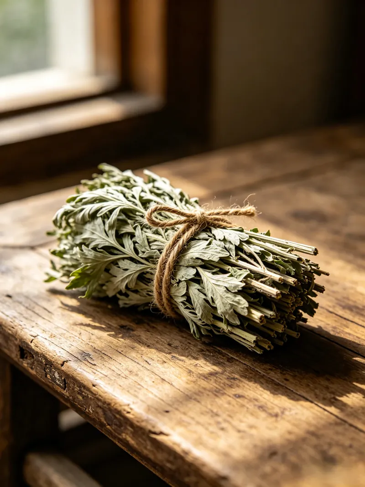

Dried Mugwort Foot Soak: The Evening Basin My Grandmother Kept by the Back Door
Across southern and eastern China, dried mugwort lives in kitchen cupboards beside rice and beans — a humble bundle tied with string. Around the Dragon Boat Festival you still see fresh bunches hanging beside doors, a summer habit that belongs more to street memory than to any single household script. This is the story of what happens when those dried leaves meet warm water on a quiet evening, told by someone who grew up watching it.
My grandmother kept a wooden basin by the back door. Every night, around eight — after the dishes were dried and the kitchen floor swept — she'd fill it with warm water, drop in a small handful of dried mugwort, and sit on a low stool with her feet submerged and her eyes half-closed. She never called it a ritual. She called it "washing off the day."
The first time I asked her why mugwort specifically, she shrugged. "It's what my mother used," she said. "It's what was in the cupboard." That's how most of these traditions actually work. Nobody writes them down. Nobody measures anything. You just grow up watching, and one day — years later, in a different city, maybe a different country — you find yourself doing the exact same thing without thinking about it.
What mugwort actually is (and isn't)
Mugwort — Artemisia argyi in Latin, ai cao (艾草) in Chinese — grows abundantly across East Asia. In Chinese folk culture it shows up everywhere: hung at doorways during the Dragon Boat Festival, burned as moxa in traditional practices, dried and tucked into kitchen drawers. It smells earthy, herbal, a little sharp — people tend to either love it or find it too strong. Both reactions are common, and neither means anything is wrong.
The dried bundles sold in Asian groceries and online are the same plant, harvested, dried, and tied with string. They're not medicine in any clinical sense. They're a household item, like dried lavender or chamomile — something people keep around because their family always kept it around. Nothing more complicated than that.
How it actually looks (not the Pinterest version)

The real thing is intentionally unglamorous. Nobody is lighting candles or putting on ambient music. It's steam above the ankles, a towel draped over a plastic stool, the quiet splash when someone shifts their heels. Sometimes the window is cracked open because the room feels small. Sometimes a cat wanders in. The whole thing lasts maybe fifteen minutes — less if the water cools fast, more if someone tops it up with a fresh pour from the kettle.
Some families do this every night all winter and hardly ever in summer. Others only break out the basin after a long shift on their feet. Some skip the mugwort entirely and just use a handful of plain salt. All of these versions are "correct" because the tradition was never standardized — it traveled from one generation's hands to the next without anyone ever writing it down. For those who need extra warmth on specific spots afterward, a DIY salt heat pack makes a natural follow-up for localized relief.
Materials

- A wide basin. Wooden ones are traditional, but anything deep enough to cover your ankles works.
- Dried mugwort labeled for household use, from a shop you trust. Never random roadside plants — mistaken plant identity is a genuine risk.
- Warm water — always tested on the inside of your wrist before your feet go anywhere near it.
- A timer if short sessions help you relax. A towel and socks for afterward.
Steps
- Rinse dust off the dried leaves. Pat them dry so loose stems don't scratch your skin.
- Pour water that feels comfortably warm on your wrist — not challenging, not hot. Swirl in a small handful of mugwort until color and scent spread through the water.
- Lower both feet slowly. Keep your toes able to wiggle freely.
- Stay for a short session your first time. Many people suggest well under ten minutes if you're brand new to this. Adjust next time based on how it felt.
- Dry carefully between your toes before walking on cool floors.
- Rinse the basin. Compost or discard the used leaves according to your local practice.
Things worth paying attention to
Water that feels "very warm but fine" can still burn skin before you notice — this is especially true for older adults or anyone with reduced sensation in their feet. Let the water cool longer than you think you need to. If your skin looks red or angry, if stinging shows up, if itching grows stronger than a mild tingle — those are your body's stop signs. Listen to them.
If the mugwort smell feels too heavy indoors, open a window or shorten the soak. The only goal here is comfort. There's nothing to push through and no award for endurance.
One more thing worth repeating: don't swap in wild plants you picked yourself unless you are absolutely, completely certain of the identification. Mugwort looks similar to several plants you do not want to steep your feet in.
Who might want to skip this one
Extra caution makes sense during pregnancy, while nursing, and for young children — not because anything will go wrong, but because comfort thresholds differ and daily routines shift fast in those chapters of life. If you already follow guidance from a healthcare professional about baths, plants, or warm-water practices, ask them before adding mugwort to the mix. Anyone with broken skin on their feet, known plant sensitivities, or a recent foot injury should skip this kind of soak entirely until a professional gives the all-clear.
If you live outside China
Dried mugwort is available at many Asian grocery stores and online. Check that the labeling is clear and in a language you can read. Keep expectations soft: this is a cozy folk pattern people grew up around, not a rigid wellness import. Some nights you might prefer plain warm water or just a hot towel — that flexibility has always been part of the tradition.
The Huangdi Neijing has a line about keeping regular daily rhythms and not overstraining. An evening foot soak — mugwort or no mugwort — is about as direct an interpretation of that old advice as you can get. I quote classical texts not as medical authority but as cultural context: the idea that small, steady routines matter has been around for a very long time.
Referenced from Huangdi Neijing - Suwen (Yellow Emperor's Inner Classic)